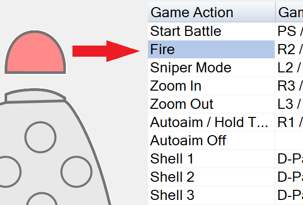

WOTPAD
Features
WOTPad translates gamepad events to keyboard and mouse events. For example, left stick movements are translated to WASD keys, right stick movements to gun/camera movements, and so on. It supports X-Box and DualShock compatible gamepads.
How to Use
- Attach your gamepad via a USB cable or Bluetooth.
- Run the WOTPad.exe application file, run the game and you are ready to play!
WOTPad supports the default WoT keyboard/mouse keys automatically. Additionally, you can easily re-assign the gamepad buttons for different game actions:
Select a button from the list of gamepad buttons.

Or, click a button on the gamepad image.

Or, click 'Assign Button' and press a gamepad button.

© 2022 SolarBytes